16 款设计一览
点击任一款，查看图片和规格。
地板、笼子、沙发和床用垫
14 款设计，16 个货号。
 107
107 123
123 124
124 125
125 126
126爪印印花，浅灰
方形垫，浅灰爪印面料，八角形压花，布条包边。黑色底布带硅胶点，在瓷砖和木地板上不易移动。
| 尺寸 | 23 × 23 in (58 × 58 cm) |
|---|---|
| 图案 | 浅灰底，狗、猫和爪印图案 |
| 面层 | 涤纶，吸水面 |
| 绗缝 | 八角格，超声波压花 |
| 包边 | 布条包边 |
| 底层 | 涤纶底布，硅胶防滑点（点径 2 mm，间距 1 cm） |
| 层数 | 4 层 · TPU 防水膜 |
| 用途 | 幼犬如厕训练、笼子、地板 |
 108
108 127
127 128
128 129
129 130
130羽毛印花，淡紫
小巧的宠物垫，淡紫羽毛印花，圆形绗缝。尺寸适合航空箱、笼子和外出，底布带防滑点。
| 尺寸 | 17 × 23 in (44 × 59 cm) |
|---|---|
| 图案 | 淡紫底，紫色羽毛图案 |
| 面层 | 涤纶，吸水面 |
| 绗缝 | 圆形绗缝 |
| 包边 | 布条包边 |
| 底层 | 涤纶底布，硅胶防滑点（点径 2 mm，间距 1 cm） |
| 层数 | 4 层 · TPU 防水膜 |
| 用途 | 航空箱、笼子、外出 |
 109
109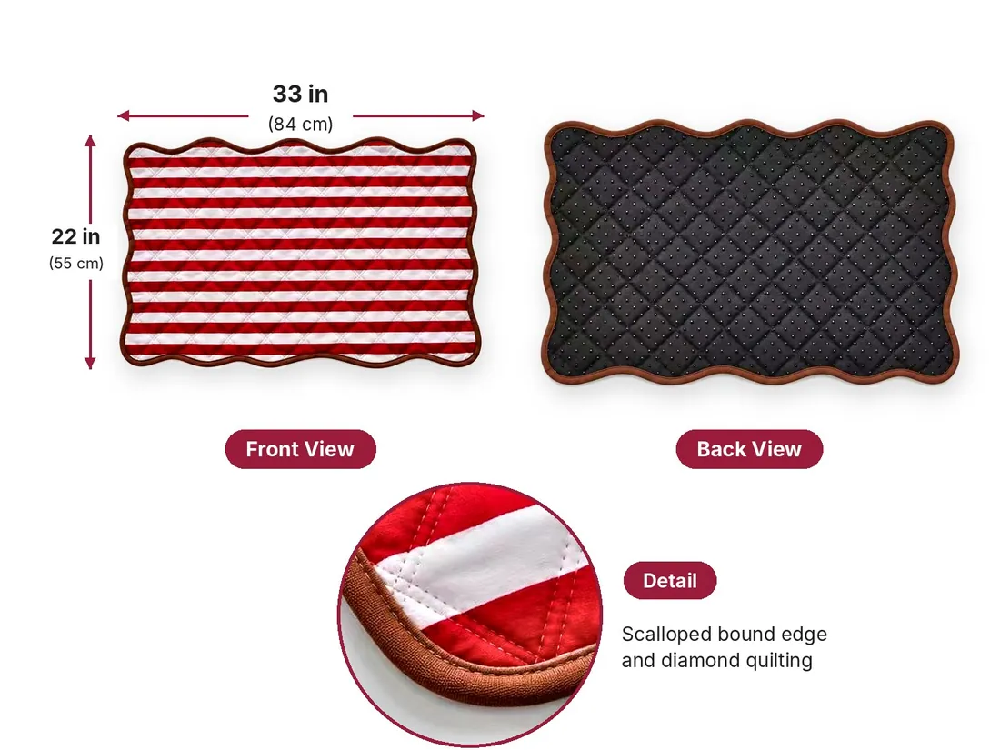
131 132
132 133
133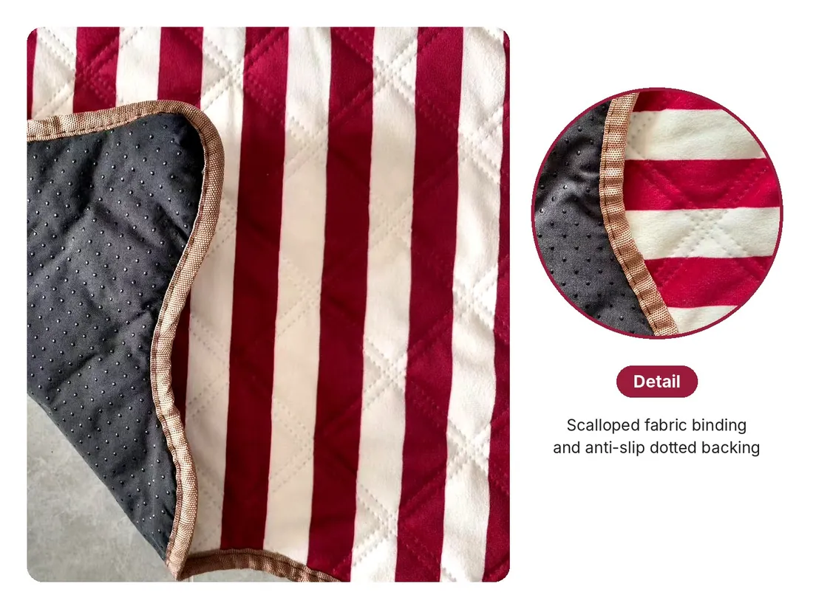
134红白条纹，波浪边
红白条纹，菱形压花，织带包边的波浪边。装饰性强，同样是含 TPU 膜的完整 4 层结构。
| 尺寸 | 22 × 33 in (55 × 84 cm) |
|---|---|
| 图案 | 红白条纹，波浪边 |
| 面层 | 涤纶，吸水面 |
| 绗缝 | 菱形图案，超声波压花 |
| 包边 | 织带包边 |
| 底层 | 涤纶底布，硅胶防滑点（点径 2 mm，间距 1 cm） |
| 层数 | 4 层 · TPU 防水膜 |
| 用途 | 家居装饰、幼犬如厕训练、地板 |
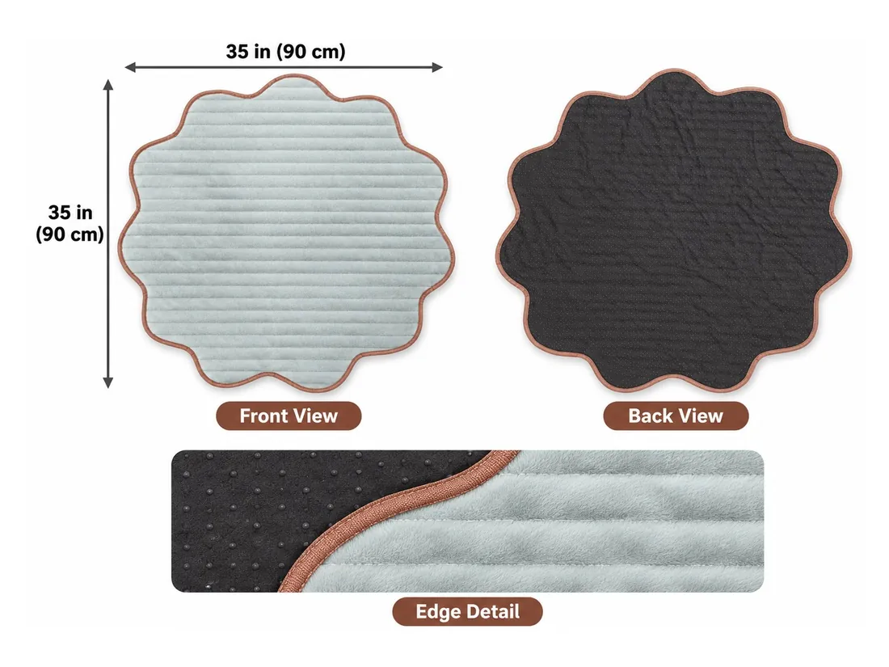
135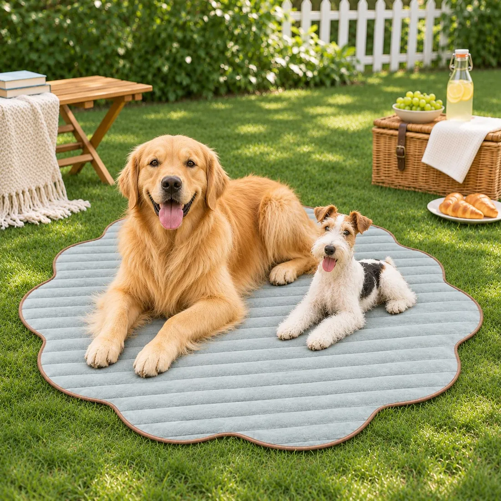
136 137
137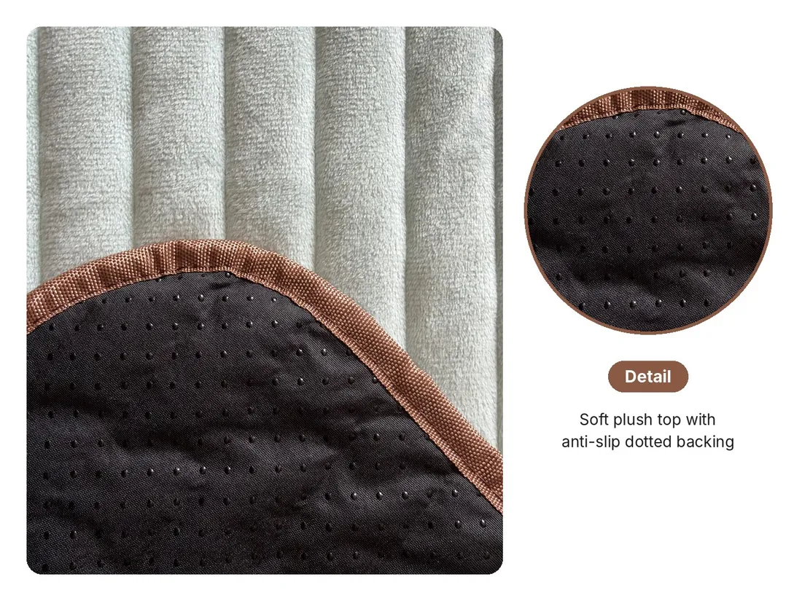
138薄荷绿圆形，波浪边
圆形薄荷绿垫，直条绗缝，波浪边。防泼水面料让液体成珠、可以擦掉；渗下去的由 TPU 膜挡住。
| 尺寸 | Ø 35 in (Ø 90 cm) |
|---|---|
| 图案 | 薄荷绿，圆形波浪边 |
| 面层 | 涤纶，防泼水面 |
| 绗缝 | 直条绗缝 |
| 包边 | 织带包边 |
| 底层 | 涤纶底布，硅胶防滑点（点径 2 mm，间距 1 cm） |
| 层数 | 4 层 · TPU 防水膜 |
| 用途 | 家居装饰、幼犬如厕训练、地板 |
 111
111 139
139 140
140 141
141 142
142格纹印花
格纹垫，菱形绗缝，织带包边。防泼水面料适合需要把洒落物擦掉的沙发和地板。
| 尺寸 | 24 × 35 in (60 × 89 cm) |
|---|---|
| 图案 | 格纹印花 |
| 面层 | 涤纶，防泼水面 |
| 绗缝 | 菱形绗缝 |
| 包边 | 织带包边 |
| 底层 | 涤纶底布，硅胶防滑点（点径 2 mm，间距 1 cm） |
| 层数 | 4 层 · TPU 防水膜 |
| 用途 | 笼子、地板、家居装饰 |
 112
112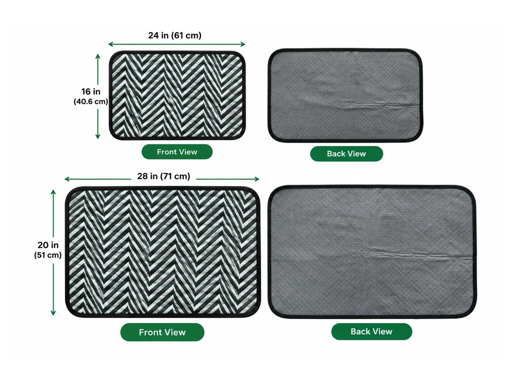
143 144
144 145
145 146
146绿色人字纹
数码印花绿色人字纹面料，菱形压花，织带包边。两个尺寸；灰色底布带硅胶点。
| 尺寸 | 512006: 28 × 20 in (71 × 51 cm) 512007: 24 × 16 in (61 × 40.6 cm) |
|---|---|
| 图案 | 绿白人字纹，数码印花 |
| 面层 | 涤纶，吸水面 |
| 绗缝 | 菱形图案，超声波压花 |
| 包边 | 织带包边 |
| 底层 | 涤纶底布，硅胶防滑点（点径 2 mm，间距 1 cm） |
| 层数 | 4 层 · TPU 防水膜 |
| 用途 | 地板、笼子、沙发 |
 113
113 147
147 148
148 149
149 150
150酒红千鸟格
酒红千鸟格数码印花，菱形压花，织带包边。防泼水面料让液体成珠、可以擦掉。两个尺寸。
| 尺寸 | 512008: 28 × 20 in (71 × 51 cm) 512009: 24 × 16 in (61 × 40.6 cm) |
|---|---|
| 图案 | 酒红白千鸟格，数码印花 |
| 面层 | 涤纶，防泼水面 |
| 绗缝 | 菱形图案，超声波压花 |
| 包边 | 织带包边 |
| 底层 | 涤纶底布，硅胶防滑点（点径 2 mm，间距 1 cm） |
| 层数 | 4 层 · TPU 防水膜 |
| 用途 | 地板、笼子、沙发 |
 114
114 151
151 152
152 153
153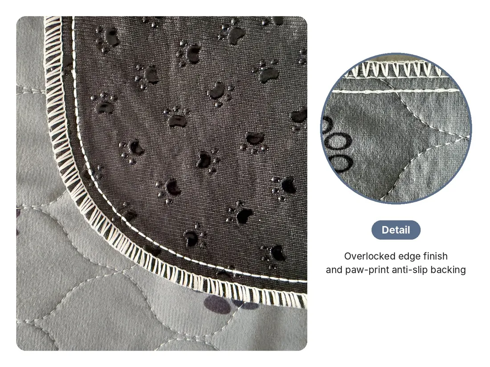
154灰色爪印
灰色爪印垫，波浪菱形绗缝，锁边。底布有爪印形硅胶防滑，适合硬地板。
| 尺寸 | 36 × 31 in (90 × 80 cm) |
|---|---|
| 图案 | 灰底，深色爪印 |
| 面层 | 涤纶，吸水面 |
| 绗缝 | 波浪菱形绗缝 |
| 包边 | 锁边 |
| 底层 | 涤纶底布，硅胶爪印防滑 |
| 层数 | 4 层 · TPU 防水膜 |
| 用途 | 地板、笼子、沙发 |
 115
115 155
155 156
156 157
157 158
158波斯地毯印花，红色
红米色波斯地毯印花，看起来像一块小地毯，菱形压花，包边。灰色防滑点底布。
| 尺寸 | 24 × 19 in (62 × 47 cm) |
|---|---|
| 图案 | 红米色波斯地毯印花 |
| 面层 | 涤纶，吸水面 |
| 绗缝 | 菱形图案，超声波压花 |
| 包边 | 包边 |
| 底层 | 涤纶底布，硅胶防滑点（点径 2 mm，间距 1 cm） |
| 层数 | 4 层 · TPU 防水膜 |
| 用途 | 笼子、床、地板 |
 116
116 159
159 160
160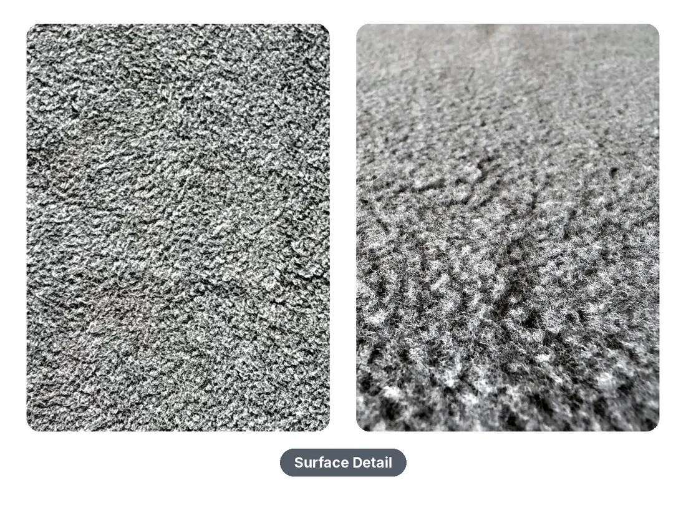
161 162
162灰色短毛绒
大尺寸垫，柔软的灰色短毛绒面料，包边，适合喜欢趴在上面当床的狗。深灰色防滑点底布。
| 尺寸 | 39 × 28 in (100 × 71 cm) |
|---|---|
| 图案 | 灰色短毛绒 |
| 面层 | 涤纶短毛绒，吸水面 |
| 绗缝 | 无绗缝 |
| 包边 | 包边 |
| 底层 | 涤纶底布，硅胶防滑点（点径 2 mm，间距 1 cm） |
| 层数 | 4 层 · TPU 防水膜 |
| 用途 | 笼子、床、地板 |
 117
117 163
163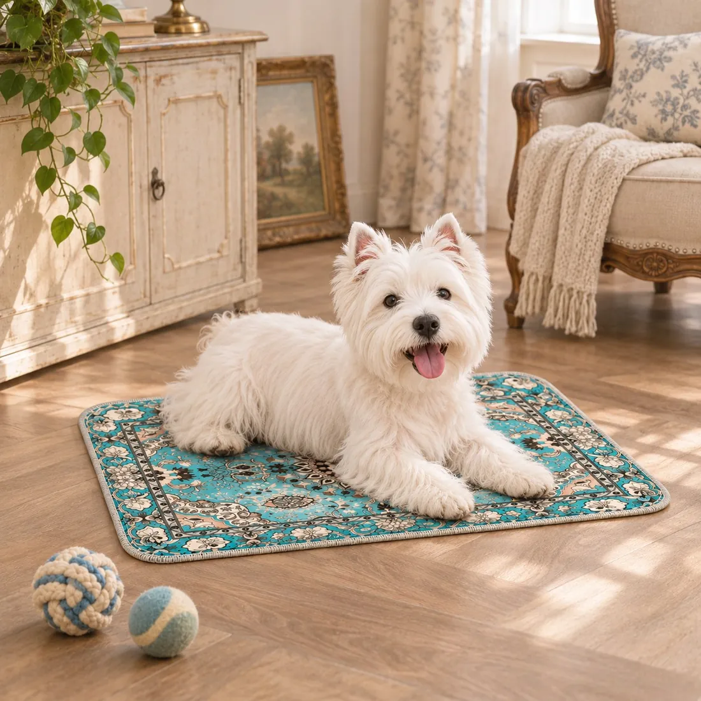
164 165
165 166
166青绿徽章印花
青绿徽章地毯印花，菱形压花，白色锁边。深色防滑点底布。
| 尺寸 | 24 × 18 in (61 × 46 cm) |
|---|---|
| 图案 | 青绿徽章地毯印花 |
| 面层 | 涤纶，吸水面 |
| 绗缝 | 菱形图案，超声波压花 |
| 包边 | 锁边 |
| 底层 | 涤纶底布，硅胶防滑点（点径 2 mm，间距 1 cm） |
| 层数 | 4 层 · TPU 防水膜 |
| 用途 | 笼子、床、地板 |
 118
118 167
167 168
168 169
169 170
170蓝色复古地毯印花
蓝、米、浅黄三色复古地毯印花，菱形压花，灰色包边。深灰色防滑点底布。
| 尺寸 | 36 × 24 in (92.5 × 62.5 cm) |
|---|---|
| 图案 | 蓝米黄复古地毯印花 |
| 面层 | 涤纶，吸水面 |
| 绗缝 | 菱形图案，超声波压花 |
| 包边 | 包边 |
| 底层 | 涤纶底布，硅胶防滑点（点径 2 mm，间距 1 cm） |
| 层数 | 4 层 · TPU 防水膜 |
| 用途 | 笼子、床、地板 |
 119
119 171
171 106
106自然花卉印花
米色底，青绿和金黄花卉，菱形绗缝，灰色包边。尺寸适合沙发和大床。
| 尺寸 | 30 × 40 in (75 × 102 cm) |
|---|---|
| 图案 | 米色底，青绿和金黄花卉 |
| 面层 | 涤纶，吸水面 |
| 绗缝 | 菱形绗缝 |
| 包边 | 包边 |
| 底层 | 涤纶底布，硅胶防滑点（点径 2 mm，间距 1 cm） |
| 层数 | 4 层 · TPU 防水膜 |
| 用途 | 沙发、床、笼子、地板 |
 120
120 172
172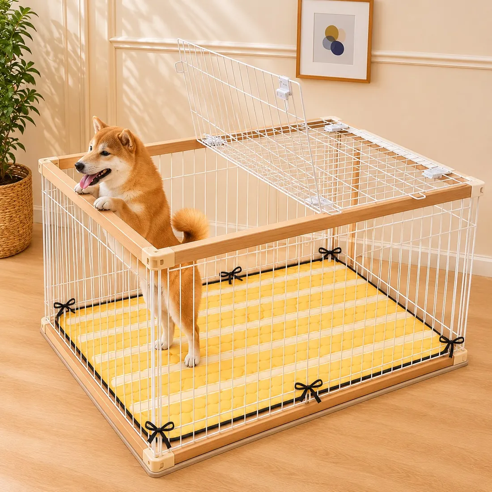
173 174
174黄色条纹，带绑带
黄米条纹，八角形绗缝，黑色包边。6 根布绑带可固定在沙发、床、笼子或汽车座椅上；底布有爪印形硅胶防滑。
| 尺寸 | 42 × 28 in (106 × 72 cm) |
|---|---|
| 图案 | 黄米条纹 |
| 面层 | 涤纶，吸水面 |
| 绗缝 | 八角形绗缝 |
| 包边 | 黑色包边 |
| 底层 | 涤纶底布，硅胶爪印防滑 |
| 绑带 | 6 根布绑带（四角 4 根，两侧 2 根） |
| 层数 | 4 层 · TPU 防水膜 |
| 用途 | 沙发、床、笼子、汽车座椅 |
仓鼠和豚鼠笼垫
 121
121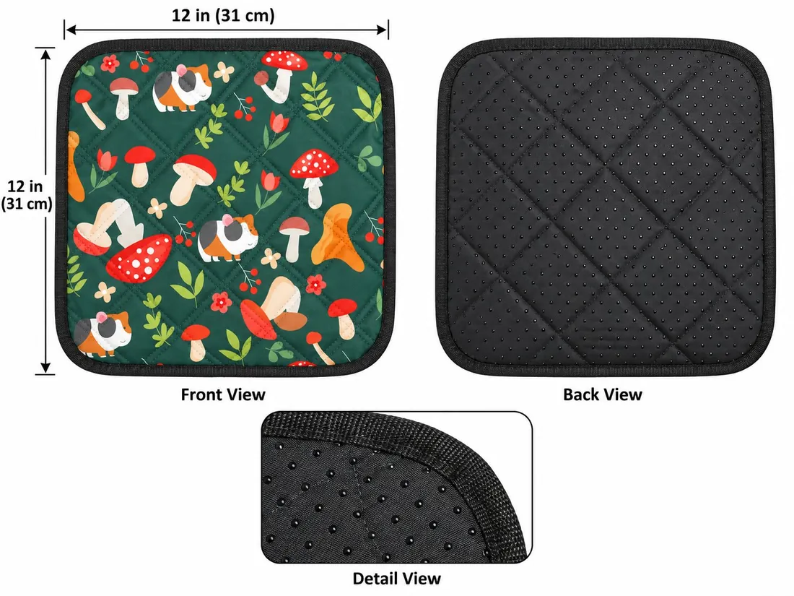
175 176
176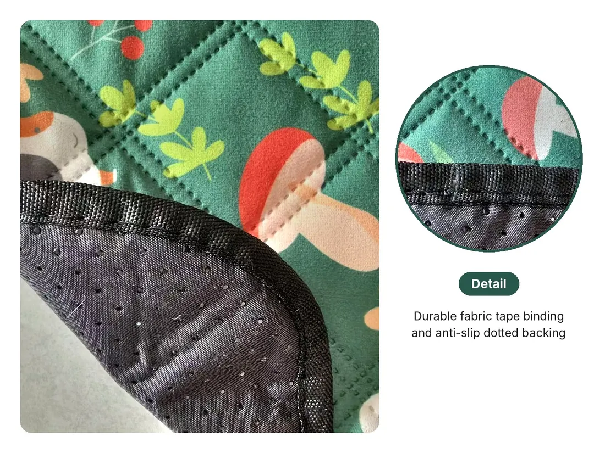
177笼垫，蘑菇印花
仓鼠、豚鼠等小动物用的可水洗笼垫：印花面料、吸水芯和防滑点，清理笼子只需换一张。
| 尺寸 | 12 × 12 in (31 × 31 cm) |
|---|---|
| 图案 | 深绿底，蘑菇图案 |
| 面层 | 涤纶，吸水面 |
| 绗缝 | 菱形图案，超声波压花 |
| 包边 | 布条包边 |
| 底层 | 涤纶底布，硅胶防滑点（点径 2 mm，间距 1 cm） |
| 层数 | 4 层 · TPU 防水膜 |
| 用途 | 仓鼠、豚鼠和小动物笼子 |
 122
122 178
178 179
179 180
180笼垫，爱心印花
浅粉色小笼垫，爱心印花，吸水芯，防滑点底布。
| 尺寸 | 11 × 11 in (29 × 29 cm) |
|---|---|
| 图案 | 浅粉底，爱心图案 |
| 面层 | 涤纶，吸水面 |
| 绗缝 | 无绗缝 |
| 包边 | 布条包边 |
| 底层 | 涤纶底布，硅胶防滑点（点径 2 mm，间距 1 cm） |
| 层数 | 4 层 · TPU 防水膜 |
| 用途 | 仓鼠、豚鼠和小动物笼子 |
每片 512 垫的内部结构
 181
181每款都是同一套 4 层结构
各款之间只有面料、绗缝、包边和尺寸不同，下面的各层都一样。
| 1 · 面料 | 涤纶：吸水面、防泼水面或短毛绒 |
|---|---|
| 2 · 吸收芯 | 针刺无纺布，涤纶 / 粘胶 |
| 3 · 防水层 | TPU 防水膜 |
| 4 · 底布 | 涤纶底布，硅胶防滑点或爪印 |
| 洗护 | 可机洗，可重复使用 |
 182
182 183
183两种面料
吸水面把液体立即吸入芯层，适合幼犬如厕训练和笼子。防泼水面让液体成珠、可以擦掉，适合沙发、床和装饰垫。两种都有 TPU 膜保持地板和家具干燥。
您的 512 系列版本
106从任一款出发，按需修改
以上每款都可以按您的尺寸、面料克重、吸水量、颜色或印花生产，也可更换包边、绗缝或防滑图案，加上您的 Logo 和包装。
| 可调整 | 尺寸、材质、面料克重、吸水量、颜色、印花、包边、绗缝、防滑图案、Logo |
|---|---|
| 包装 | 定制水洗标和彩卡；零售或散装包装 |
| 货号 | 新的组合会有自己的 512 编号 |
正在规划宠物垫产品线？
请发来您看中的货号、尺寸和数量。我们会在一个工作日内回复价格和交期。